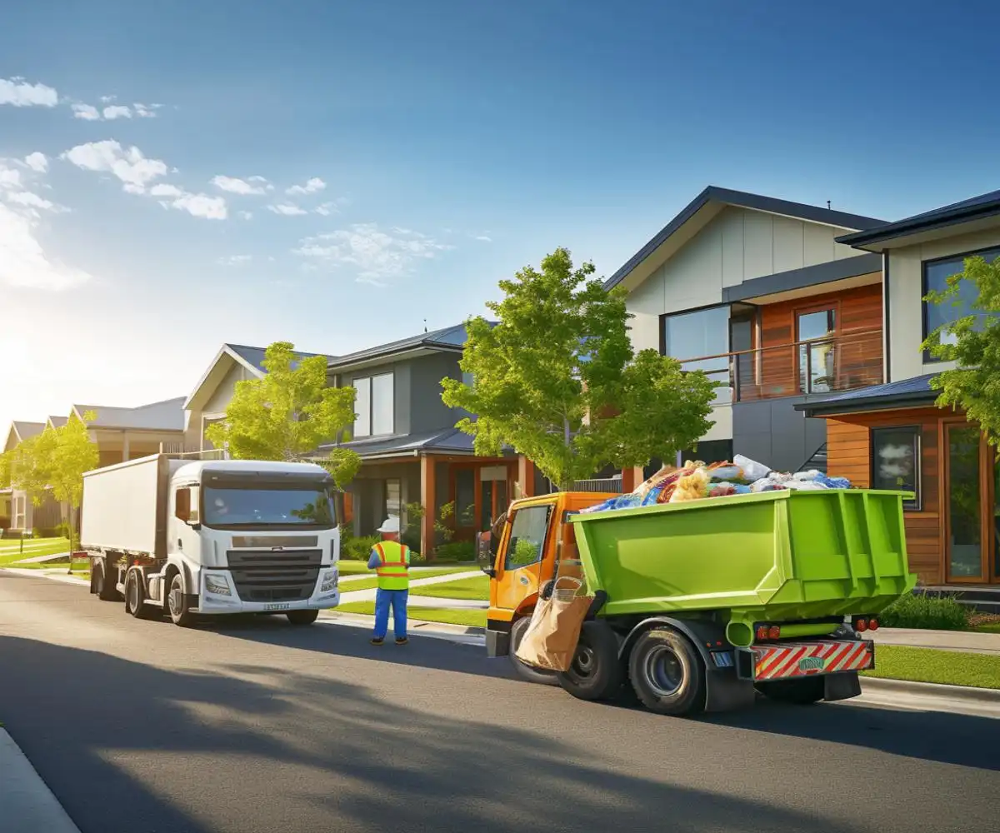
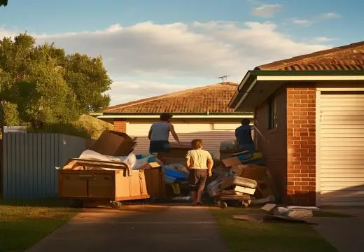
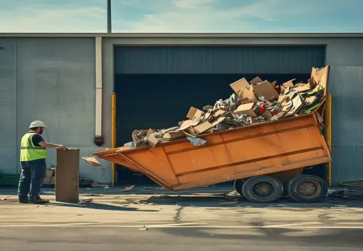
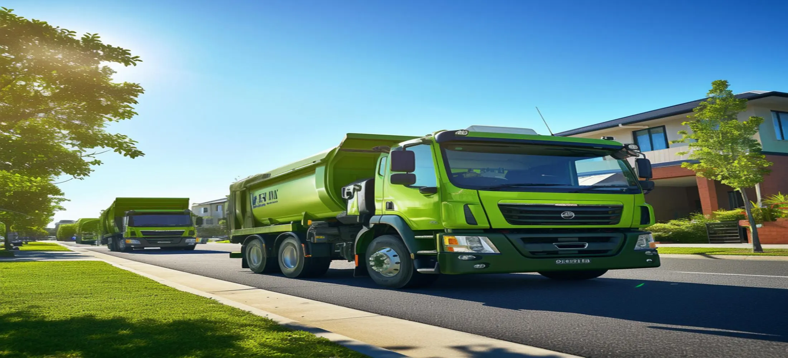
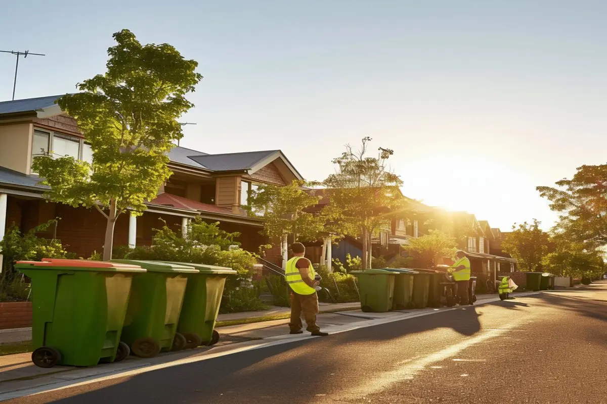

Fast Delivery
Prompt skip bin delivery available across Bunbury and surrounding suburbs.
Skip bin hire Bunbury is a practical solution for managing waste from home cleanouts, renovations, landscaping projects, construction work, rental property turnovers, and business clearances. We supply skip bins for homeowners, builders, landlords, property managers, and local businesses looking for an easier way to remove unwanted waste without multiple trips to the tip. With a range of bin sizes available, we help customers across Bunbury WA choose the right option for their project and arrange convenient delivery and collection.
Providing skip bin hire across Bunbury WA and nearby South West communities

Prompt skip bin delivery available across Bunbury and surrounding suburbs.
Bin sizes available for rubbish from 2m³ to 12m³ .
Competitive prices tailored to your waste volume and project requirements.
Servicing Bunbury WA and nearby South West communities.
Skip bin hire Bunbury WA is commonly used for residential cleanups, landscaping projects, commercial waste removal, renovations, and building work. Hiring the right skip bin helps reduce trips to the local waste facility, saves time, and keeps properties organised throughout the project. We supply a range of skip bin sizes to suit different waste types and job requirements.
Suitable for timber, bricks, plasterboard, tiles, concrete, and demolition materials generated during renovation and construction projects.
Ideal for tree branches, leaves, grass clippings, shrubs, soil, and general landscaping waste from residential and commercial properties.

Perfect for garage cleanouts, moving house, furniture disposal, deceased estate clearances, and unwanted household rubbish.

Suitable for offices, retail shops, warehouses, property maintenance, and commercial refurbishment projects requiring ongoing waste removal.
Bunbury continues to experience residential development, property upgrades, landscaping projects, and commercial activity, creating ongoing demand for convenient waste removal solutions. Different property types and project sizes often require different skip bin capacities and placement options.

Waste removal requirements across Bunbury vary depending on whether the project involves a home renovation, garden upgrade, rental property turnover, or commercial maintenance work. Choosing the correct skip bin size helps avoid unnecessary costs while ensuring enough capacity for the waste being generated.
We provide skip bins hire Bunbury solutions for properties with different access conditions, including residential driveways, construction sites, commercial premises, and larger rural blocks. Proper placement and timely collection help keep projects running efficiently.
Customers searching for cheap skip bin hire Bunbury or cheapest skip bin hire Bunbury often discover that the lowest overall cost comes from selecting the right bin size and waste category from the beginning. This helps minimise overloading, excess weight charges, and unnecessary upgrades.
We operate across Bunbury WA & Surrounding South West suburbs.
Local skip bin hire availability depends on location, access, and project type across Bunbury and nearby.
When you hire skip bin Bunbury services, selecting the right provider can make a significant difference to both cost and convenience. Reliable delivery, appropriate bin sizing, and clear pricing help ensure waste is removed efficiently without delays to your project.
We assist homeowners, builders, landscapers, property managers, and local businesses throughout Bunbury WA by providing practical skip bin solutions for a wide range of waste removal requirements. Whether you need a small household bin or a larger commercial skip, we help match the bin to the project.
Multiple skip bin sizes available to suit small cleanups through to large construction projects.
Suitable for household rubbish, green waste, renovation debris, furniture, and general commercial waste.
Competitive skip bin hire Bunbury prices with solutions available for both short-term and ongoing projects.
Fast delivery and collection scheduling throughout Bunbury and surrounding South West locations.
We provide skip bin hire Bunbury WA services for residential, commercial, and construction projects requiring an efficient way to manage waste. Our goal is to simplify rubbish removal by supplying the right bin size for each project and arranging convenient delivery and collection.
Many customers comparing skip bin hire Bunbury providers are unsure what size bin they need. We help identify the most suitable option based on waste type, estimated volume, site access, and project duration, helping avoid unnecessary costs and delays.
Whether you are undertaking a household cleanup, landscaping project, renovation, office relocation, or building project, we provide skip bins designed to support efficient waste management throughout Bunbury and nearby South West communities.
Book Skip Bin Now
Real experiences from homeowners, tradespeople, and local businesses using our skip bin hire Bunbury service for everyday waste removal.
“I honestly didn't expect it to be this simple. We were clearing out my parents' old house in South Bunbury and the bin just made the whole job feel manageable. We filled it over a weekend and everything was gone the next day.”— Emily Carter, South Bunbury
“We're doing constant landscaping work around Eaton and I've used a few skip bin companies before. These guys were the first ones who actually gave us the right size upfront, so we didn't end up paying for an extra bin.”— Jason Miller, Eaton
“I run a small renovation crew and we needed a bin on short notice for a bathroom strip-out in Dalyellup. It showed up same day, no drama, and we kept the job moving without delays.”— Craig Thompson, Dalyellup
Skip bin hire Bunbury prices generally depend on the bin size selected, waste type, disposal costs, hire duration, and total weight of the material being removed. Heavier waste streams such as bricks, concrete, and soil often cost more to process than general household or green waste.
The most affordable option depends on the amount and type of waste being disposed of. Smaller skip bins are usually the most cost-effective choice for garage cleanups, household rubbish, and garden waste projects.
The ideal skip bin size depends on the volume of waste generated. Small household cleanups often require compact bins, while renovations, construction work, and property clearances generally require larger skip bins. We can help determine the appropriate size before booking.
Most skip bins accept household rubbish, furniture, green waste, timber, renovation debris, and general commercial waste. Hazardous materials such as asbestos, chemicals, batteries, and certain electronic items may require special disposal methods.
Delivery availability depends on location, bin size, and current demand. Many customers can arrange next-day delivery, while urgent projects may be accommodated sooner depending on scheduling availability.
Receive a fast response with upfront pricing and no hidden fees.